축산기사 (2016-10-01 기출문제)
1과목: 가축육종학
1. 유지율 3.5%인 우유를 6,000㎏ 생산하는 암소의 4% 유지 보정 유량(4% FCM : fat-corrected milk)은?
- 5,550㎏
- 5,650㎏
- 5,700㎏
- 5,800㎏
(정답률: 70%)

2. 형질 A와 B의 유전공분산이 5이고 A와 B의 유전분산이 각각 25이면 A와 B의 유전상관은 얼마인가?
- 0.5
- 0.2
- 0.02
- 0.01
(정답률: 69%)
3. 정규분포를 나타내는 집단의 변이 크기는 표준편차로 나타낸다. 한우의 생시체중의 평균은 23㎏이고, 표준편차는 3㎏이다. 이 형질이 정규분포를 한다고 가정한다면 한우 송아지의 95%가 속할 수 있는 체중의 범위는 얼마인가?
- 21.5 ~ 24.5 ㎏
- 20.0 ~ 26.0 ㎏
- 18.5 ~ 27.5 ㎏
- 17.0 ~ 29.0 ㎏
(정답률: 43%)
4. 다음 중 한우의 체중형질 중에서 유전력이 가장 높은 것은?
- 이유시 체중
- 6개월 체중
- 12개월 체중
- 종료시 체중
(정답률: 41%)
5. 육우의 두 품종 A와 B에서 최대의 잡종 강세를 기대하기 위해서 다음 중 어떤 교배체계를 선택해야 하는가?
- A × B
- (A × B) × A
- (A × B) × (B × A)
- (A × B) × B
(정답률: 74%)
6. 어느 유우의 1산차 유지방 생산량이 230kg이고, 그 우군의 평균 유지방 생산량은 180 ㎏이며, 유지방 생산량의 유전력이 0.35일 때 이 개체의 육종가는?
- 188.5 ㎏
- 194.0 ㎏
- 197.5 ㎏
- 201.5 ㎏
(정답률: 79%)
7. 다음 중 한우의 개량에 고려하여야 할 경제형질이라고 보기 어려운 것은?
- 번식능력
- 증체량
- 뿔의 모양
- 도체품질
(정답률: 86%)
8. 돼지 검정을 체중 30㎏일 때 시작하여 110㎏일 때 검정을 종료하였고, 검정 기간은 총 85일 소요되었으며 이 기간 동안 소비된 사료의 양은 215㎏이 소요되었다면, 이 돼지의 사료 요구율은?
- 1.95
- 2.53
- 2.69
- 2.83
(정답률: 71%)
9. 육용계 형질 중 유전력이 가장 낮은 것은?
- 사료효율
- 도체율
- 체지방율
- 생체중
(정답률: 39%)
10. 종축으로 선발된 개체들의 평균치와 모집단의 평균치의 차이를 나타내는 것은?
- 유전력
- 선발비율
- 선발차
- 선발강도
(정답률: 87%)
11. 개체의 능력과 그 개체가 속해 있는 가계의 평균능력과의 차이를 기준으로 한 선발방법은?
- 결합 선발
- 가계 선발
- 가계내 선발
- 개체 선발
(정답률: 71%)
12. 한우 집단의 3개월령 체중에 대한 집단의 평균이 50이고 선발군이 56일 때 선발차는?
- 6
- 56
- 62
- 106
(정답률: 85%)
13. 근친교배의 유전적 효과로 바르게 설명한 것은?
- 집단내의 동형 접합체의 비율이 증가한다.
- 축군내의 이형접합체의 비율이 증가한다.
- 집단내의 유전자형 빈도에 영향을 주지 않는다.
- 집단내의 평균 근교계수가 감소한다.
(정답률: 84%)
14. 다음 중 종간잡종으로 생산되는 동물은?
- 말
- 노새
- 염소
- 나귀
(정답률: 88%)
15. 닭에서 근교 계통이라 하는 것은 자손의 근교계수가 몇 % 이상인 경우인가?
- 계통의 평균 근교 계수가 20% 이상인 경우
- 계통의 평균 근교 계수가 30% 이상인 경우
- 계통의 평균 근교 계수가 40% 이상인 경우
- 계통의 평균 근교 계수가 50% 이상인 경우
(정답률: 57%)
16. 유각(hh)과 무각(HH)인 소의 교잡으로 태어난 F1을 부모 중 유각인 소와 다시 교배시켰을 때 나타나는 자손들의 무각과 유각의 분리비는?
- 3 : 1
- 1 : 0
- 1 : 1
- 7 : 1
(정답률: 59%)
17. Goodale, Hay의 산란 5요소에 해당되지 않는 것은?
- 산란지속성
- 취소성
- 항병성
- 조숙성
(정답률: 76%)
18. 다음 중 반성유전현상에 해당되지 않는 것은?
- 사람의 시신경소모증
- 개의 크리스마스병
- 닭의 만우성과 조우성
- 닭의 역우 현상
(정답률: 50%)
19. 반성유전에 대한 설명으로 옳은 것은?
- 양성 중에서 한쪽 성에 한해서만 어떤 형질이 나타나는 유전현상
- 성 염색체에 성 이외의 형질을 지배하는 유전자가 성과 연관하여 유전하는 현상
- 암수 유전자형은 동일하나 표현형이 암수 간에 다르게 나타나는 현상
- 성과 무관하게 어떤 형질 발현에 무수히 많은 유전자가 작용하는 유전자 작용
(정답률: 55%)
20. 재래 가축을 개량하기 위하여 개량종으로 4세대까지 누진교배 시 개량종의 혈통은 몇 %나 되는가?
- 81.25%
- 87.50%
- 93.75%
- 96.88%
(정답률: 72%)
2과목: 가축번식생리학
21. 다음 중 저수태우의 예방대책이 아닌 것은?
- 수정 시 세균오염 방지
- 수정적기에 수정
- 영양개선
- 난포호르몬 투여
(정답률: 64%)
22. 소의 난자가 배란된 후 수정능력을 유지할 수 있는 최대의 시간은?
- 6시간 이내
- 12~24시간
- 22~27개월
- 29~34개월
(정답률: 86%)
23. 젖소(홀스타인)의 성성숙 월령으로 가장 적합한 것은?
- 8 ~ 13개월
- 15 ~ 20개월
- 22 ~ 27개월
- 29 ~ 34개월
(정답률: 68%)
24. 가축의 임신기간에 관한 설명 중 틀린 것은?
- 가축의 임신기간은 품종에 따라 차이가 있고 주로 유전자형의 차이에 기인한다.
- 돼지의 임신기간은 150일 전후이다.
- 가축의 연령, 영양, 기온 및 계절과 같은 환경적 요인도 임신기간에 영향을 미친다.
- 쌍태분만이나 태아의 크기가 클수록 임신기간이 다소 짧아지는 경향이 있다.
(정답률: 79%)
25. 다음 중 포유가축 수컷에서 정자생성 기능이 완성되고 부생식선이 발달하여 교미와 사정이 가능하게 되어 암컷을 임신시킬 수 있는 상태에 도달한 시기는?
- 태아기
- 유아기
- 성성숙기
- 유년기
(정답률: 89%)
26. 다음 중 소의 정자 형성에 관한 설명으로 틀린 것은?
- 정조(정원)세포가 정자세포로 발달하는데 소의 경우 약 8개월이 소요된다.
- 정자세포는 핵염색질의 농축, 정자의 미부의 발달과 같은 정자완성 과정을 거쳐 정자가 된다.
- 제1정모세포에서 제2정모세포가 되는 과정에서 감수분열이 일어난다.
- 정자는 정자형성이라는 특수한 과정에 의거 세정관 상피에서 만들어진다.
(정답률: 64%)
27. 다음 중 성숙한 포유가축의 난소에서 혈관, 림프관 및 신경이 분포되어 있는 곳은?
- 난소 피질
- 난소 수질
- 그라피안 난포
- 원시 난포
(정답률: 45%)
28. 가축에게 프로스타글란딘(PGF2α)을 투여했을 때 가장 현저하게 감소하는 혈중 호르몬은?
- 프로게스테론
- 에스트로겐
- 테스토스테론
- 바소프레신
(정답률: 75%)
29. 다음 중 임신 중인 포유가축의 태반이 수행하는 생리적 기능이 아닌 것은?
- 태아의 호흡조절
- 태아의 온도조절
- 호르몬 생산
- 영양분 흡수
(정답률: 53%)
30. 다음 중 정자형성에 있어서 장해 요인이 아닌 것은?
- 기후
- 잠복정소
- 교미장해
- 정소의 퇴화
(정답률: 61%)
31. 다음에서 prostaglandin은 주로 어디에서 분비되는가?
- 정낭선
- 중추신경계
- 정소상체
- 카우퍼선
(정답률: 55%)
32. 다음 중 자궁내 미이라변성 태아가 있을 때에 대한 설명으로 틀린 것은?
- 난포의 발육이 억제되어 발정이 나타나지 않는다.
- 난소에 위축된 난포가 많이 있다.
- 감염으로 태아와 태막의 탈수에 의해 발생된다.
- 프로스타글란딘(prostaglandin)의 투여로 태아를 배출시켜야 한다.
(정답률: 64%)
33. 다음의 정액채취방법 중 소에서 가장 널리 사용되는 방법은?
- 전기 자극법
- 마사지법
- 인공질법
- 콘돔법
(정답률: 77%)
34. 다음 중 계절번식을 하는 동물은?
- 소
- 돼지
- 토끼
- 말
(정답률: 74%)
35. 다음 중 유선에 대한 설명으로 틀린 것은?
- 유선의 발생학적 원기는 내배엽이다.
- 유즙을 분비하는 기본 구조는 유선포이다.
- 유선에서 비유가 개시되는 데는 프로락틴(prolactin)의 역할이 가장 중요하다.
- 유선의 조직학적 구조는 복합 관성 포상선으로 되어 있다.
(정답률: 74%)
36. 다음 중 가축인공수정의 장점이 아닌 것은?
- 우수 씨가축의 이용범위가 확대된다.
- 전염병 감염을 예방할 수 있다.
- 정액의 원거리 수송이 가능하다.
- 방목하는 집단에서 활용이 용이하다.
(정답률: 82%)
37. 하나의 난모세포는 몇 개의 난자로 발달하는가?
- 1개
- 2개
- 3개
- 4개
(정답률: 71%)
38. 다음 중 소와 돼지에서 황체가 퇴행하기 시작하는 시기부터 배란이 일어나기까지의 기간에 해당하는 난포기(follicular phase)는?
- 1 ~ 2일
- 4 ~ 5일
- 7 ~ 8일
- 10 ~ 11일
(정답률: 45%)
39. 젖소의 난소에서 난포가 발육되지 않아 무발정이 계속될 때 치료제로서 가장 적합한 호르몬은?
- Progesterone
- Prostaglandin F2α
- Prolactin
- PMSG
(정답률: 46%)
40. 자궁을 형태적으로 분류할 때 쌍각자궁에 해당하는 동물은?
- 집토끼
- 돼지
- 소
- 원숭이
(정답률: 81%)
3과목: 가축사양학
41. 다음 중 ( )에 알맞은 내용은?
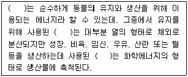
- 정미에너지
- 가스에너지
- 가소화에너지
- 총에너지
(정답률: 76%)
42. 다음에서 설명하는 것은?
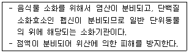
- 소낭
- 췌장
- 선위
- 배설강
(정답률: 81%)
43. 다음 중 비육돈의 지방축적 순서로 옳은 것은?
- 신장지방 → 근간지방 → 피하지방 → 근내지방
- 신장지방 → 피하지방 → 근간지방 → 근내지방
- 근간지방 → 신장지방 → 피하지방 → 근내지방
- 근간지방 → 피하지방 → 신장지방 → 근내지방
(정답률: 47%)
44. 다음 중 ( )에 알맞은 내용은?
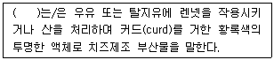
- 전유
- 대용유
- 인공유
- 유청
(정답률: 81%)
45. 소에서 영양분 우선공급의 순서로 옳은 것은? (단, 우선 공급되는 조직을 왼쪽부터 시작한다.)
- 지방 → 뼈 → 근육 → 뇌
- 지방 → 근육 → 뇌 → 지방
- 근육 → 뇌 → 뼈 → 지방
- 뇌 → 뼈 → 근육 → 지방
(정답률: 80%)
46. 다음 영양소 중에서 수용성 비타민에 속하는 것은?
- 비타민 A
- 비타민 C
- 비타민 E
- 비타민 K
(정답률: 85%)
47. 다음 중 가소화영양소총량(TND)의 식으로 옳은 것은?
- 가소화 탄수화물 × 가소화 단백질 + 가소화 지방 × 2.25
- 가소화 탄수화물 + 가소화 단백질 + 가소화 지방 × 2.25
- 가소화 탄수화물 × 가소화 단백질 × 가소화 지방 × 2.25
- 가소화 탄수화물 × 가소화 단백질 × 가소화 지방 ÷ 2.25
(정답률: 80%)
48. 다음에서 설명하는 것은?
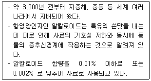
- 대두박
- 채종박
- 루핀
- 야자박
(정답률: 60%)
49. 다음 중 사료효율(FE)의 식으로 옳은 것은?
- (사료 섭취량 × 2.25) / 증체량
- 사료 섭취량 / 증체량
- (증체량 × 2.25) / 사료 섭취량
- 증체량 / 사료 섭취량
(정답률: 66%)
50. 조류의 소화기관을 순서대로 옳게 나열한 것은?
- 선위 → 근위 → 소낭 → 소장
- 선위 → 소낭 → 근위 → 소장
- 근위 → 선위 → 소낭 → 소장
- 소낭 → 선위 → 근위 → 소장
(정답률: 61%)
51. 다음 ( )에 알맞은 내용은?
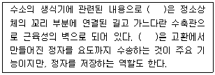
- 요도구선
- 전립선
- 정낭선
- 정관
(정답률: 59%)
52. 친환경관련법상 유기축산물 축사조건으로 틀린 것은?
- 충분한 자연환기와 햇빛이 제공될 수 있을 것
- 공기순환, 온도·습도, 먼지 및 가스농도가 가축건강에 유해하지 아니한 수준 이내로 유지되어야 할 것
- 사료와 음수는 세균번식을 막기 위해 거리를 둘 것
- 건축물은 적절한 단열·환기시설을 갖출 것
(정답률: 76%)
53. 동물체내에서 물에 대한 설명으로 옳지 않은 것은?
- 섭취된 영양소를 적당히 희석시켜 주어 소화를 돕고, 영양소와 대사생성물의 수송을 돕는다.
- 용매제로서의 우수성을 이온화하는 힘이 큰 가장 이상적인 분산배지이다.
- 비열이 큰 물질로서, 체내에서 영양소의 산화로 생성되는 열을 효과적으로 흡수하여 급격한 체온 상승을 막아준다.
- 증발열이 작아 체온을 효과적으로 조절할 수 잇다.
(정답률: 70%)
54. 다음 중 핵산을 분해하는 효소는?
- 리보뉴클레아제
- 레닌
- 모노글리세리드
- 이소락타아제
(정답률: 77%)
55. 다음에서 설명하는 것은?
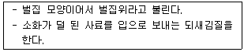
- 제4위
- 제3위
- 제2위
- 제1위
(정답률: 74%)
56. 다음 중 담즙산의 기능으로 옳지 않은 것은?
- 유화작용으로 지방의 소화를 촉진한다.
- 콜레스테롤이 혈관 내에서 침전 없이 녹아있도록 한다.
- 췌장에서 분비되는 펩신을 활성화시킨다.
- 더욱 녹기 쉬운 형태로 만들어 비타민 A, D와 카로틴의 흡수를 돕는다.
(정답률: 65%)
57. 다음 중 반추동물의 침의 기능으로 틀린 것은?
- 사료를 삼키기 쉽도록 수분을 제공한다.
- 요소(urea)나 광물질의 재활용을 돕는다.
- 반추동물의 침 속에는 아밀라아제(amylase)가 있다.
- 완충물질을 공급하여 반추위의 pH를 유지한다.
(정답률: 69%)
58. 다음 중 미량광물질의 반추위 내 대사작용으로 틀린 것은?
- Cu는 셀룰로오스의 소화를 촉진하며 단백질, 아미노산, 탄수화물의 대사를 활성화시켜서 미생물 단백질의 합성을 증가시킨다.
- Mn은 박테리아나 원생동물의 셀룰로오스 분해능력을 돕지는 못하지만, 여러 가지 중요한 효소로 즉 전효소로서 작용한다.
- Mo은 Cu와 함께 셀룰로오스 소활율과 휘발성 지방산 생성을 증진한다.
- Zn은 셀룰로오스의 소화를 억제하는 효과를 가졌으나, 여러 가지 효소의 조효소로서 작용한다.
(정답률: 56%)
59. 다음 중 Se의 결핍증상은?
- 심장의 위축
- 닭의 삼출성 소질
- 전신마비
- 시야장애
(정답률: 70%)
60. 반추동물용 섬유질배합사료의 장점이 아닌 것은?
- 기호성이 증진되어 건물섭취량이 증가되므로 생산성이 향상된다.
- 사료배합기 등의 기계비용이 적게 든다.
- 조사료의 섭취량이 증가해 대사장애가 적게 발생한다.
- 생식관리가 가능하다.
(정답률: 79%)
4과목: 사료작물학 및 초지학
61. 옥수수 재배 시 질소시비량은 성분량기준으로 ha당 200kg 정도라 하고, 질소 비료로 요소를 사용할 경우 요소의 실제 시비량은? (단, 요소의 질소함량은 46%이다.)
- 250 ㎏/ha
- 336 ㎏/ha
- 435 ㎏/ha
- 541 ㎏/ha
(정답률: 64%)
62. 목초의 하고현상을 방지하기 위한 관리방법으로 틀린 것은?
- 기비로 퇴비, 석회, 인산의 시비
- 여름철 예취 후 질소 시비
- 장마 전에 짧게 예취
- 적절한 관계시설
(정답률: 53%)
63. 석회의 역할 중 틀린 것은?
- 토양 산도를 교정한다.
- 질소를 공급한다.
- 토양미생물 활동을 촉진시킨다.
- 칼슘의 공급원으로 이용된다.
(정답률: 69%)
64. 옥수수 사일리지 조제법 중 가장 좋은 조건은?
- 수분함량을 40%, pH를 4.5로 맞추어 밀폐한다.
- 수분함량을 40%, pH를 6.5로 맞추어 공기가 잘 통하게 한다.
- 수분함량을 70%, pH를 4.5로 맞추어 밀폐한다.
- 수분함량을 70%, pH를 6.5로 맞추어 공기가 잘 통하게 한다.
(정답률: 74%)
65. 옥수수 파종 시 재식밀도를 지나치게 높게 하였을 때 나타나는 현상이 아닌 것은?
- 암 이삭의 발육이 미약하다.
- 도복이 되기 쉽다.
- 양분, 수량 면에서는 유리하다.
- 이삭이 생기지 않는 그루가 생긴다.
(정답률: 77%)
66. 밤나방과 나비목에 속하는 해충으로 5월 하순과 6월 중순에 가장 많이 발생하며, 옥수수 등 화본과 목초에 피해를 주는 해충은?
- 진딧물
- 멸강나방
- 혹명나방
- 애멸구
(정답률: 82%)
67. 건초 조제 중에는 여러 가지 손실이 있으나 특히 두과 목초에서 양분손실이 가장 큰 것은?
- 잎의 탈락에 의한 손실
- 발효, 일광조사 및 공기 접촉에 의한 손실
- 강우에 의한 손실
- 식물의 호흡에 의한 손실
(정답률: 72%)
68. 다음 중 사일리지 발효에 영향을 미치는 요인이 아닌 것은?
- 수용성 탄수화물
- 불용성 인산
- 수분함량
- 재료의 절단 및 진압
(정답률: 69%)
69. 초지 조성 시 혼파의 장점이 아닌 것은?
- 영양분과 기호성이 높은 양질의 사료를 생산한다.
- 공간의 효과적 활용으로 광이용성이 향상된다.
- 파종하기가 쉬워진다.
- 초종 간 경합을 경감시킨다.
(정답률: 68%)
70. 임간 초지의 장점에 대한 설명으로 틀린 것은?
- 수분함량이 높아 발아와 정착이 양호하다.
- 여름철 하고의 피해를 줄일 수 있다.
- 목책 설치비용이 절감된다.
- 광합성이 촉진되어 목초수량이 증가한다.
(정답률: 52%)
71. 초지가 환경개선에 기여하는 효과 중 가장 관계가 없는 것은?
- 수자원을 보호한다.
- 경관을 좋게 한다.
- 공기를 정화시킨다.
- 병해충을 방제한다.
(정답률: 73%)
72. 사료작물 재배 시 바람직한 가축분뇨 이용방법이 아닌 것은?
- 화학비료와는 달리 많이 시용할수록 좋다.
- 잘 부숙된 퇴비나 액비를 사용하여야 한다.
- 분뇨 시용 후 일정 기간이 지난 후 작물을 파종한다.
- 악취로 인한 피해를 줄이는 사용방법을 택하여야 한다.
(정답률: 82%)
73. 초지에서 질소의 증가요인이 아닌 것은?
- 빗물에 용해되어 있는 질소
- 암모니아의 기화
- 공생적 질소고정
- 유기물 또는 질소비료의 시용
(정답률: 72%)
74. 건초의 수분함량으로 가장 알맞은 것은?
- 15% 이하
- 20 ~ 25%
- 30 ~ 35%
- 40 ~ 45%
(정답률: 79%)
75. 다음 목초 중 근계가 잘 발달되어 있기 때문에 가뭄에 잘 견디며, 습지에 생육이 강하고, 뿌리가 방석형 형태인 초종은?
- 리드카나리그라스
- 오차드그라스
- 티머시
- 퍼레니얼라이그라스
(정답률: 41%)
76. 일반 사일로에서 옥수수 사일리지를 만들 때 옥수수의 수확적기는?
- 유숙기
- 황숙기
- 완숙기
- 고숙기
(정답률: 82%)
77. 다음 중 건초의 품질 평가 기준이 아닌 것은?
- 녹색도
- 잎의 비율
- 생산지
- 수분함량
(정답률: 82%)
78. 가을철 목초 파종적기로 가장 옳은 것은?
- 일평균기온이 0℃ 되는 날로부터 30~40일 전
- 일평균기온이 5℃ 되는 날로부터 60~80일 전
- 일평균기온이 20℃ 되는 날로부터 60~80일 전
- 일평균기온과 관계없다.
(정답률: 77%)
79. 목초의 여왕으로 불리며 생산력이 뛰어난 다년생 두과 목초로 단백질 함량이 높으며 건초, 생초, 사일리지, 방목 등 다양하게 이용되는 목초는?
- 화이트 클로버
- 레드클로버
- 크림슨클로버
- 알팔파
(정답률: 84%)
80. 생육단계와 성분함량 변화의 관계를 설명한 것 중 틀린 것은?
- 조단백질 함량은 초기 생육단계에서 높다.
- 성분함량은 초종 간 차이만 있을 뿐 전 생육단계에 걸쳐 동일하다.
- 섬유소 함량은 생육이 진행될수록 증가한다.
- 리그닌 함량은 생육이 진행될수록 증가한다.
(정답률: 76%)
5과목: 축산경영학 및 축산물가공학
81. 다음 중 축산물 유통의 특수성에 대한 설명으로 틀린 것은?
- 가축은 성숙되기 전일지라도 상품적인 가치가 있다.
- 축산물의 수요 공급은 탄력적인 성격을 띠고 있어 가격변동에 대한 대응이 단시간에 이루어지기 쉽다.
- 가축을 사육하는 생산농가가 영세적이고 분산적이기 때문에 유통단계상 수집상 등의 중간상인이 개입되어야할 소지가 많다.
- 가축은 이동거리와 시간에 따라 생체의 감량이 발생하기 때문에 가축시장에서의 거래가 이루어지기보다는 중간상인 및 구매자가 구매하고자 하는 가축에 따라 이동하는 경우가 많다.
(정답률: 73%)
82. 농장을 경영하기 위해서는 경영의 순환과정이 필요한데 경영계획 순서로 옳은 것은?
- 계획(설계) → 운영 → 조직 → 평가 → 통제 → 조사 → 분석 → 계획(설계)
- 계획(설계) → 조사 → 운영 → 조직 → 평가 → 통제 → 분석 → 계획(설계)
- 계획(설계) → 조사 → 분석 → 운영 → 조직 → 평가 → 통제 → 계획(설계)
- 계획(설계) → 조직 → 운영 → 평가 → 통제 → 조사 → 분석 → 계획(설계)
(정답률: 53%)
83. 다음 중 유동자본재인 것은?
- 사료
- 축사
- 착유기
- 트랙터
(정답률: 85%)
84. 양계경영에서 육성률의 산출식으로 옳은 것은?
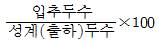
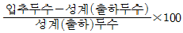
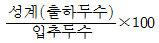
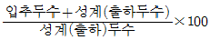
(정답률: 64%)
85. 다음 중 (가), (나)에 알맞은 내용은?
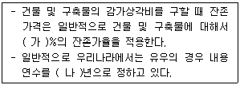
- 가 : 10, 나 : 6
- 가 : 15, 나 : 5
- 가 : 20, 나 : 4
- 가 : 25, 나 : 3
(정답률: 60%)
86. 다음에서 설명하는 것은?
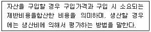
- 시가평가법
- 추정가평가법
- 취득원가법
- 수익가평가법
(정답률: 62%)
87. 다음에서 설명하는 것은?
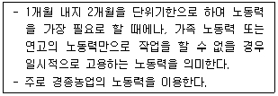
- 일고
- 상고
- 주고
- 계절고
(정답률: 61%)
88. 다음 중 토지의 경제적 성질이 아닌 것은?
- 불가경성
- 불가증성
- 불가동성
- 불소모성
(정답률: 64%)
89. 다음 중 가족경영의 특징으로 틀린 것은?
- 축산물의 생산목적이 주로 소득증대에 있다.
- 가족 노동력에 대한 노임이 보장되는 한 생산은 지속적으로 영위될 수 있다.
- 경영과 가계가 분리된 상태의 경영형태이다.
- 가족 수의 제한성 때문에 규모의 영세성을 면하기 어렵다.
(정답률: 78%)
90. 다음 중 단일경영에 대한 특징으로 틀린 것은?
- 기계 이용이 쉽다
- 자본의 회전이 원만하다.
- 생산물의 동일성에 의하여 시장정보의 유리성이 있다.
- 생산비의 저하가 가능하여 시장경쟁력이 증대된다.
(정답률: 49%)
91. 근원섬유단백질의 약 절반을 차지하며 ATP를 ADP와 무기인산으로 분해하는 근육의 수축을 주도하는 단백질은?
- myosin
- actin
- tropomyosin
- troponin
(정답률: 55%)
92. 저지방우유에서 원유의 유지방분 함량 범위에 속하지 않는 것은?
- 0.6%
- 1%
- 2%
- 3%
(정답률: 78%)
93. 육제품의 부패방지를 위한 조건에 대한 설명으로 틀린 것은?
- 원료육에 103/cm2 또는 103/g의 세균이 존재하면 변색, 점액물질 또는 이상취 등이 발생한다.
- 박테리아는 pH 7.0인 중성에서 가장 빨리 증식하며 pH5.0 이하 또는 8.0 이상에서는 증식이 억제된다.
- 아질산염 첨가는 식중독 미생물 억제에 효과가 있다.
- 미생물에 의해 일어나는 식품의 부패나 변패를 방지하기 위해 보존료로 소르빈산과 소르빈산칼륨을 첨가한다.
(정답률: 42%)
94. 사후 근육의 변화에 대한 설명으로 틀린 것은?
- 체내 혈액순환의 중단은 근육에 산소 공급이 중단되는 것을 의미한다.
- 혐기적대사로 생성된 젖산은 포도당과 글라이코젠으로 재합성된다.
- 방혈 후 근육은 산화적 대사가 중단되며 혐기적 대사로 전환된다.
- 근육에 축적되는 젖산 때문에 근육의 pH가 강하된다.
(정답률: 76%)
95. 버터 제조 시 교동(churning)에 영향을 주는 요인이 아닌 것은?
- 크림의 양
- 크림의 온도
- 교동장치의 회전속도
- 색소와 소금의 양
(정답률: 66%)
96. HACCP에서 식육가공품 가공공정 중 “제조공정 – 위해요인 –방지책”의 연결이 잘못된 것은?
- 원료육 처리 – 병원성 미생물 – 미생물 검사
- 염지 – 이물질 – 염지액의 오염방지
- 포장과 보존 – 물리적 위해요인 – 금속탐지기 이용
- 세절- 화학물질 – 제품 보증서 확인
(정답률: 75%)
97. 기본적인 아이스크림 제조공정에서 견과 등 고급 첨가물을 투입하는 단계는?
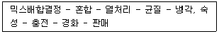
- 열처리 공정 전
- 균질 공전 전
- 냉각, 숙성 공정 전
- 충전 공정 전
(정답률: 55%)
98. 냉장상태에서 신선육을 호기 상태로 저장할 때 부패를 일으키는 그람음성간균 미생물이 아닌 것은?
- Acinetobactor 속
- Moraxella 속
- Pseudomonas 속
- Lactobacillus 속
(정답률: 68%)
99. 식육의 냉장저장 중 변화에 대한 설명으로 옳은 것은?
- 1℃로 온도를 낮추면 효모, 곰팡이, 세균은 1% 이하의 생존율을 나타낸다.
- Acinetobactor, Moraxella, Pseudomonas 속 등의 부패균에 의해 주요 불쾌취가 생성된다.
- Mucor, Rhizopus, Penicillium 속 등의 곰팡이류에 의해 식육 표면에 변색 및 솜털 같은 것이 생긴다.
- 식육의 변색은 산소분압이 10mmHg일 때 최대로 일어난다.
(정답률: 45%)
100. 식육의 육질 특성에 대한 설명으로 틀린 것은?
- 고기의 색은 미오글로빈의 화학적인 상태와 함량에 영향을 받는다.
- 고기의 색은 가축의 종류 및 연령과 관계가 없다.
- 고기의 연도는 근섬유의 수축상태 및 근내지방도의 축적정도에 상관이 있다.
- 고기의 풍미에 영향을 주는 요소는 동물의 종류, 연령, 품종 및 성별 등이다.
(정답률: 81%)